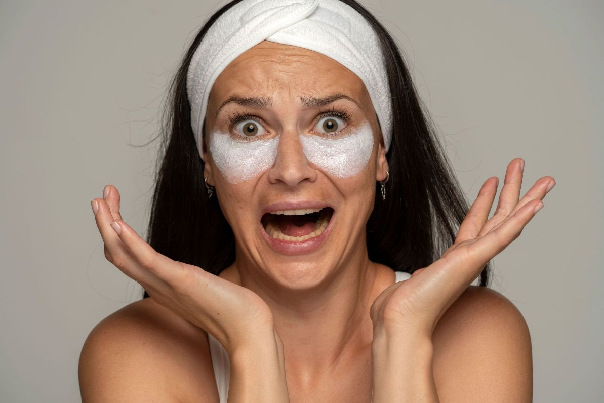
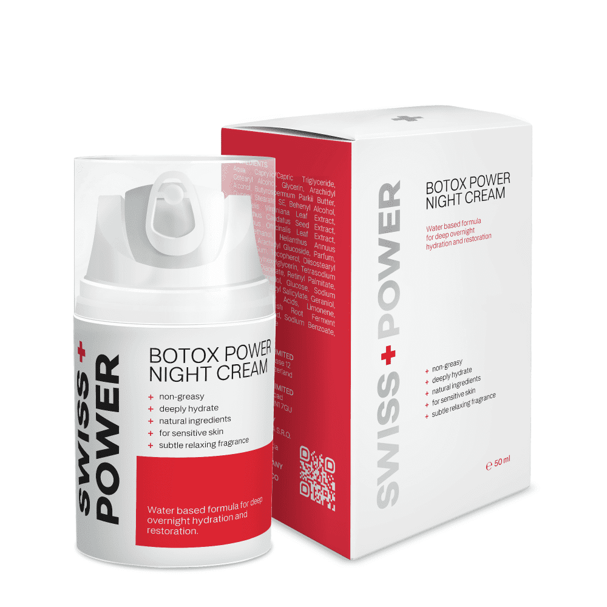
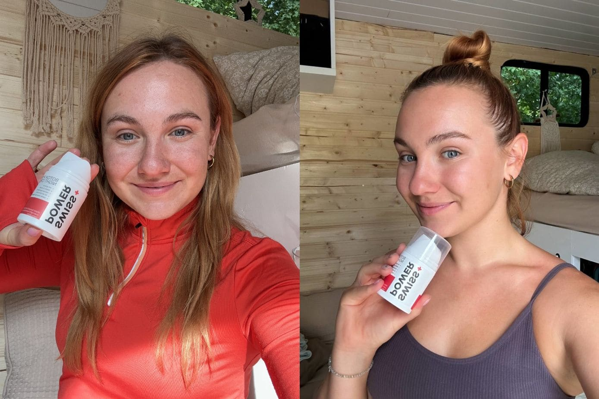
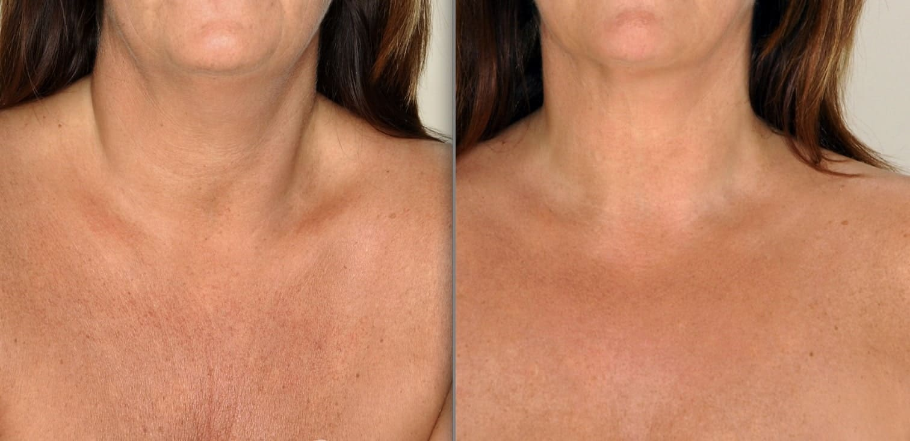

Advertorial
La Verità Nascosta Sulla Sete della Tua Pelle per l'Idratazione - Leggi prima che venga cancellato!
Ti sei mai chiesta perché la tua pelle sembri desiderare sempre più idratante, lasciandoti con una sensazione di dipendenza e insoddisfazione? C'è una soluzione rivoluzionaria che rompe questo ciclo.
Nella ricerca della pelle perfetta, molti cadono nella trappola dell'eccessiva idratazione con prodotti artificiali. L'ironia sta nel fatto che queste creme, pensate per idratare, spesso peggiorano lo stato della nostra pelle nel tempo.
La tua pelle è l'organo più grande del tuo corpo ed è anche uno dei più ingannevolmente complessi. Ogni giorno, le persone vengono indotte a credere che, per mantenere la salute della loro pelle, devono fare affidamento su una costante serie di prodotti. Tuttavia, questa potrebbe non essere la scelta migliore nella maggior parte dei casi.
Immagina questo: una pelle opaca e senza vita che non sa più come idratarsi da sola. Applicazioni infinite di creme che promettono idratazione ma portano solo a una dipendenza. Più le usi, più sembra che la tua pelle ne abbia bisogno.
Non si tratta solo di secchezza, ma di un problema più profondo. I classici idratanti interferiscono con la capacità naturale della tua pelle di auto-idratarsi, creando un ciclo di dipendenza che invecchia la tua pelle prematuramente.
Ne parleremo meglio più avanti...
Che succede?
Nel mondo frenetico della cura della pelle, si svela una trama clandestina nei corridoi di una potente società. Al comando, un gruppo di astuti dirigenti elabora un piano per mantenere i consumatori perpetuamente dipendenti dagli idratanti, la gallina dalle uova d'oro del loro impero di bellezza.
Una promessa seducente…
Un team di marketing, armato di strategie persuasive, introduce l'incanto della giovinezza eterna e della pelle radiante attraverso gli idratanti. La promessa di idratazione diventa un canto delle sirene, attirando i consumatori in un ciclo di dipendenza senza fine..
Il circolo vizioso
Mentre i consumatori cedono al fascino iniziale, entrano inconsapevolmente in un ciclo meticolosamente progettato dalla società. Ogni applicazione di idratante sembra una necessità, creando una dipendenza che garantisce un flusso costante di entrate per l'azienda.
La diversità ingannevole
Le corporazioni, proprietarie di molteplici marchi di cura della pelle (sapevi che il 90% dei marchi di cura della pelle è di proprietà di uno dei tre giganti della cosmetica), commercializzano strategicamente una serie di idratanti. Dalle creme alle lozioni, ogni prodotto afferma di offrire una soluzione unica, alimentando la convinzione che più è meglio. I consumatori, intrappolati nell'illusione della scelta, si addentrano sempre di più nel labirinto dell'idratazione.
L’agenda nascosta
Behind the scenes, scientists employed by the corporation carefully formulate products that, instead of addressing the root cause, perpetuate the need for continuous moisturizing. Ingredients are chosen not for long-term benefits but for immediate gratification, ensuring a steady stream of sales.
Il circolo vizioso continua…
Cosa ne pensi della capacità di auto-idratazione?
La tua pelle sa quando ha bisogno di idratazione e, in condizioni normali, produrrà sebo in base alle necessità.
Purtroppo, l'uso cronico di prodotti idratanti sabota questo processo.
Quando la pelle percepisce di essere già idratata, smetterà semplicemente di svolgere il suo compito di produrre e secernere sebo.
Tra una applicazione e l'altra della tua crema idratante, o se smetti di usarla, la pelle viene a mancare di una protezione critica e diventa così estremamente vulnerabile all'essiccamento.
Questo porta spesso le persone a credere di avere una pelle cronica secca e di non avere altra scelta se non quella di fare affidamento su prodotti per la pelle per rimediare al problema.
Molti esperti chiamano questo fenomeno "dipendenza dalle creme".
Quando è stata l'ultima volta che hai pensato a com’è fatto il tuo idratante preferito?
Hai letto l'etichetta, ma hai ignorato tutti quegli ingredienti difficili da pronunciare pensando che fossero necessari?
Ciò che molte persone non capiscono è che gli ingredienti nella maggior parte dei prodotti commerciali in realtà favoriscono la pelle secca. Sostanze come alcoli, acidi, conservanti, profumi e coloranti possono agire come solventi, che rimuovono gli oli dalla tua pelle.
Per complicare ulteriormente le cose, la glicerina, che dovrebbe aiutare la tua pelle, è efficace solo quando i livelli di umidità sono superiori al 70 percento.
Se vivi in un clima secco o freddo, o se trascorri la maggior parte del tempo al chiuso, è improbabile che l'umidità ambiente raggiunga mai tali livelli.
Quale può essere una buona soluzione?
Ti presento la Crema Notte SWISS+POWER: una rivoluzione nel mondo della cura della pelle. Questa formula rivoluzionaria non solo idrata, ma ripristina la capacità innata della tua pelle di auto-idratarsi.
"Ci sono voluti circa 2 anni per perfezionare la nostra Crema Notte Restituente SWISS+POWER, ma quando finalmente ci siamo riusciti, come si suol dire, il resto è storia."
Come funziona?
Svelando la scienza dietro una pelle radiante, sviluppata con ingredienti che sono stati dimostrati avere benefici a lungo termine nel ripristinare la capacità di auto-idratazione della pelle.
BURRO DI KARITÉ
Il segreto per ripristinare la capacità di auto-idratazione della tua pelle. Ricco di emollienti essenziali e nutrienti, il burro di karité non solo idrata, ma va oltre, migliorando la barriera cutanea idratante. La tua pelle diventa un serbatoio di idratazione naturale, liberandosi dalle catene degli idratanti artificiali.

ROSMARINO
Il rosmarino entra in gioco con le sue proprietà anti-infiammatorie e antiossidanti. Oltre alla superficie, il rosmarino favorisce la salute generale della pelle, creando un ambiente in cui la tua pelle appare non solo più sana, ma anche più tonica. Non si tratta solo dell'aspetto esteriore; si tratta di nutrire la tua pelle da dentro..
HAMAMELIS
Un miracolo botanico rinomato per le sue proprietà tonificanti. Tonificando la pelle, non solo riduce il rossore, ma gestisce efficacemente la pelle grassa e soggetta all'acne. Come bonus aggiuntivo, il profumo naturale dell'hamamelis offre un piacevole esperienza sensoriale durante la tua routine di cura della pelle.
Insieme, questi ingredienti attentamente selezionati costituiscono la base del successo della Crema Notte SWISS+POWER. Non si tratta di una soluzione temporanea, ma di un approccio olistico alla cura della pelle che revitalizza, rifornisce e ripristina la capacità innata della tua pelle di auto-idratarsi.
Vivi la potenza trasformativa della natura con la Crema Notte SWISS+POWER, perché la tua pelle merita solo il meglio.
Svegliati con una pelle naturalmente morbida, elastica e ringiovanita.
Inizia la trasformazione di 6 mesi per liberarti dalle catene della dipendenza e abbracciare il vero potenziale della tua pelle.
Ma come funziona?
Non limitarti a credere a noi: ascolta chi ha vissuto la trasformazione.
La vera storia dell'efficacia della Crema Notte SWISS+POWER risiede nelle esperienze di coloro che hanno provato il prodotto e partecipato a sondaggi indipendenti*.
Clienti provenienti da diverse esperienze e con diversi tipi di pelle hanno segnalato risultati trasformativi, mettendo in evidenza l'efficacia del prodotto nel ripristinare la capacità di auto-idratazione della pelle e affrontare le comuni preoccupazioni per la cura della pelle.
- Il 100% ha segnalato una pelle più idratata.
- Il 96% ha segnalato una pelle più liscia.
- Il 92% ha segnalato un aroma piacevole e calmante.
*Basato su un sondaggio indipendente tra gli acquirenti recenti. Dimostrato per aumentare l'idratazione della pelle, l'elasticità e la levigatezza della pelle, fornendo nel contempo un piacevole aroma calmante.
Mettere tutto alla prova (Mamma mia, la sorpresa…)
Ho ordinato il prodotto dal sito ufficiale ed è arrivato piuttosto velocemente (un paio di giorni).
Avevo un po' la sensazione che se questo non avesse funzionato, nulla avrebbe funzionato.
Quindi, l'ho immediatamente spalmato sulla mia pelle. La consistenza era ottima e si è assorbita subito nella mia pelle.
Non era eccessivamente "oleosa" come alcuni idratanti tendono ad essere, il che era fantastico.
La mattina successiva quando mi sono svegliata, non mi aspettavo davvero di vedere alcuna differenza ancora.
Il che era buono, perché effettivamente non l'ho vista.
Dopotutto, nulla di buono funziona dopo un solo giorno. In effetti, non sarei sorpresa se ci volesse del tempo per vedere una differenza (se ne vedessi qualcuna).
Ma ecco dove arrivano le sorprese. Perché, che ci crediate o no, NON ci è voluto tanto tempo.
In realtà, non è nemmeno servito un mese. La seconda settimana in cui mi sono svegliata dopo aver usato la crema ogni notte, ho notato che la mia pelle sembrava MOLTO più liscia.
La mia pelle era più luminosa e visibilmente più liscia. Ho smesso completamente di usare la crema da giorno, semplicemente non c'era più bisogno.
E tutto questo è successo dopo SOLO due settimane!
Ecco quando ho cominciato ad entusiasmarmi davvero. Ho sentito tornare la speranza per la prima volta in anni.
Perché se ci sono volute solo due settimane per vedere un cambiamento, immagina cosa potrebbe accadere dopo un mese o due.
Anche la mia famiglia e i miei amici hanno notato. Pensavano che finalmente stessi riposando meglio...
Cosa che ovviamente non c'entrava nulla in realtà.
Ma il fatto che nessuno mi dicesse più quanto sembrassi stanco era già una ricompensa di per sé.
Non potevo fare a meno di sorridere ogni volta che guardavo allo specchio. Era come se stessi guardando attraverso una macchina del tempo.
Lo so, sembra una specie di fiaba. Ancora oggi, non riesco davvero a crederci completamente.
Avanti veloce fino ad ora che sto scrivendo questo, e ancora uso questa crema sul mio viso ogni singolo giorno. Due piccole macchie scure che avevo sulla guancia sono sparite... Una profonda ruga che avevo sotto il mio occhio sinistro appare MOLTO meno evidente...
"La mia fiducia è ai massimi livelli! Mi sento di nuovo me stessa!"
Allora sorge la domanda: funzionerà per TE?
Onestamente, non posso dire con certezza al 100% che funzionerà.
Ma se hai lottato con la pelle secca o la rugosità per molto tempo e NIENTE altro ha funzionato, ti consiglio vivamente di provarlo.
Ha cambiato completamente la mia vita e non sono l'unica.
Quindi fai un favore a te stessa e prova da sola. Anche se sei scettica che possa effettivamente funzionare.
Non hai idea di quanto differenza possa fare qualcosa di così piccolo e semplice.
Inoltre, VOGLIONO che ottieni dei risultati, altrimenti non paghi. Quindi non c'è NULLA da perdere.
Per quanto tempo ancora continuerai a lottare con idratanti costosi ed inefficaci?
La crema notte SWISS+POWER ti offre una soluzione autentica con ingredienti naturali e sicuri, clinicamente provati per ripristinare la capacità autoidratante della tua pelle.
Dì addio a sostanze chimiche nocive e tattiche ingannevoli delle grandi aziende che guadagnano enormi profitti mantenendoti legato ai loro idratanti e altri prodotti in questo ciclo vizioso che beneficia solo loro e non noi, i consumatori.
A differenza di molti prodotti per la cura della pelle, noi crediamo nella completa trasparenza.
"I prodotti SWISS+POWER sono sviluppati con anni di ricerca e sperimentazioni e sono prodotti da una piccola azienda con sede in Svizzera che investe l'80% dei guadagni nella ricerca e sviluppo di prodotti che apportano un beneficio a lungo termine e trattano le cause alla radice, anziché concentrarsi sul marketing, garantendo che ogni ingrediente contribuisca al ripristino delle capacità naturali della tua pelle."
Con la crema notte SWISS+POWER, puoi fidarti di una formula che mette al primo posto la salute della tua pelle.
Non permettere che prodotti ingannevoli accelerino il processo di invecchiamento.
La crema notte SWISS+POWER è qui per fornire risultati reali a una frazione del costo, garantendo che non dovrai più cercare senza fine soluzioni per la cura della pelle che deludono o, peggio ancora, danneggiano la tua pelle.
Quanto ci vuole per vederne i benefici?
Il percorso verso una pelle rivitalizzata e autoidratante con la crema notte SWISS+POWER è entusiasmante, e potrai iniziare a notare cambiamenti positivi entro poche settimane di uso costante.
I risultati individuali possono variare, ma molti utenti riferiscono di una maggiore idratazione, di una riduzione del rossore e di un miglioramento generale della salute della pelle in appena due o quattro settimane.
La miscela unica di ingredienti naturali, tra cui Hamamelis, Burro di Karité e Rosmarino, lavora in armonia per sbloccare la capacità innata della tua pelle di autoidratarsi.
La pazienza è fondamentale, poiché la formula nutre la tua pelle dall'interno, contribuendo a un incarnato radioso e ringiovanito nel tempo.
Fai della crema notte SWISS+POWER un rituale serale e intraprendi un viaggio alla scoperta del pieno potenziale della tua pelle. La costanza è la tua alleata sulla strada verso un incarnato più sano e vibrante.
Per quanto tempo dovrei usare la crema?
A seconda della tua condizione, età ed abitudini di vita, è consigliato utilizzare la crema notte SWISS+POWER in modo costante per almeno 3-6 mesi per ripristinare completamente la capacità della tua pelle di autoidratarsi.
Per mantenere la capacità "persa e di recente ritrovata" di autoidratazione, è consigliato ripetere il ciclo di un mese ogni 4 mesi.
Tieni presente che i risultati individuali possono variare e ogni individuo è unico, pertanto il trattamento dovrebbe essere adattato in base a ciò.
Quanto dura una bottiglia?
In genere, una confezione dovrebbe durarti almeno due mesi, ed è consigliato usarla anche su collo e décolleté. Spesso dimentichiamo che la pelle in queste zone è altrettanto sensibile e i segni dell'invecchiamento compaiono altrettanto velocemente come sul viso.
Dove posso acquistare la crema notte SWISS+POWER?
Puoi ordinare il prodotto in qualsiasi momento sul sito ufficiale al miglior prezzo.
Al momento è in atto una Promozione Speciale esclusivamente per nuovi clienti.
Questa promozione è disponibile solo fino al 11.11.2023 o fino a esaurimento scorte.
Tutti gli ordini sono coperti da una garanzia di rimborso di 30 giorni - senza problemi. Puoi restituire i prodotti e chiedere il rimborso se non sei soddisfatto dei risultati e otterrai i tuoi soldi indietro.
Significa che puoi provare il prodotto completamente senza alcun rischio! Non ottieni una tale garanzia con la maggior parte degli altri prodotti per la cura della pelle che solitamente acquisti in farmacia.
Ricorda: non stai solo usando una crema; stai sbloccando un futuro radiante e autoidratante per la tua pelle.
Immagina quanto denaro e tempo risparmierai. Userai solo un prodotto una volta ogni quattro mesi (o meno) dopo che la tua pelle si sarà autoidratata.
Pronto a liberarti dalla trappola dell'idratazione?
Prova oggi stesso la crema notte SWISS+POWER senza rischi e scopri la magia di una pelle sana che si idrata da sola, senza pori ostruiti e eruzioni cutanee!
Non vediamo l'ora di sentire la tua esperienza con la crema notte SWISS+POWER.
I tuoi risultati dopo 1 mese, 4 mesi e oltre.
Vorrai scattare una foto prima e dopo!
Clicca qui per verificare la disponibilità dell'offerta speciale per i nuovi clienti. >>Ma ricorda, questa offerta speciale e la consegna gratuita sono disponibili solo per coloro che agiscono oggi.
Se lasci questa pagina, la crema notte SWISS+POWER sarà disponibile solo sul sito ufficiale al suo prezzo pieno e regolare, che è quasi il doppio di quanto potresti acquistarla oggi.
Prova ora senza rischi la crema notte SWISS+POWER. >>
Cosa dicono gli altri sulla Crema Notte SWISS+POWER?
GEMMA BIANCHI, 56 ANNI, Verona| Acquirente Verificato
⭐⭐⭐⭐⭐
"Adoro tutto nella linea di prodotti SWISS+POWER, e questa crema notte è così fantastica che la uso anche durante il giorno! Si assorbe completamente e lascia la mia pelle davvero liscia.
Il profumo è perfetto - non troppo forte e scompare rapidamente dopo l'applicazione. Essendo una persona che soffre di emicrania, mi danno fastidio i profumi forti, ma questa crema ha un odore piacevole che non persiste.
Ma anche se persistesse, non mi dispiacerebbe affatto! C'è abbastanza prodotto nel barattolo, quindi ho la sensazione di ottenere il giusto rapporto qualità-prezzo."
MARTINA GUARAGNI, 32 ANNI, Milano | Acquirente Verificato
⭐⭐⭐⭐⭐
"Crema viso davvero deliziosa. La mia pelle si sente fantastica. Basta usare una piccola quantità ogni volta e lascia la pelle morbida e elastica."
ELENA P., 74 ANNI, R.Calabria | Acquirente Verificato
⭐⭐⭐⭐⭐
"Dopo solo pochi giorni di utilizzo di questa crema di notte, il mio viso si sente più morbido e più liscio. Non si sente così cremosa come vorrei quando la applico, ma fa sentire bene la mia pelle. Aggiungo anche l'olio di rosa mosqueta, ma sono sicura che è questa crema che sta migliorando la texture della mia pelle. Ho 74 anni e stiamo vivendo il periodo più secco di sempre, quindi è significativo che la mia pelle si senta più idratata. Ha un leggero profumo e non ne vado pazza, ma non lo noto una volta applicato sul viso. Probabilmente comprerò di nuovo questa crema."
MARIA BIANCHI, 22 ANNI, Milano | Acquirente Verificato
⭐⭐⭐⭐⭐
“Adoro questa crema notte. È molto idratante e la mia pelle si sente bella e morbida la mattina seguente. Davvero ne serve pochissima, quindi il barattolo dura per un bel po'. Mi piace anche molto il profumo!”
MARCO PAGNI, 40 ANNI, Roma | Acquirente Verificato
⭐⭐⭐⭐⭐
“Dopo aver cambiato la mia dieta e aver eliminato lo zucchero, i cibi trasformati e i prodotti di origine animale, la mia consapevolezza ambientale ha raggiunto nuovi livelli. Ho capito che non potevo più spalmare sulla mia pelle prodotti carichi di sostanze chimiche dubbie. Ho iniziato a cercare alternative naturali e, dopo qualche tentativo ed errore, ho trovato questo prodotto. Fa miracoli per la mia pelle (carnagione chiara/combination-to-dry/sensibile). Dopo una settimana di utilizzo ho notato un miglioramento sostanziale. La mia pelle è ora più elastica e meno incline a rughe dovute ai sorrisi, alle smorfie o a segni di stress.”